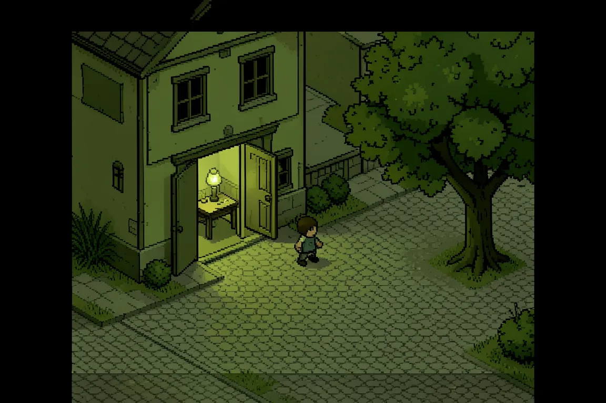

spill · 1989–1998 · også: Game Boy-utseende, DMG-grønn, Monokrom med fire toner
En 160×144-skjerm med fire toner av én olivengrønn fargetone. Hvert hus og rom tegnes av 8×8-fliser i lys, to mellomtoner og mørk, slik at formen bare ligger i verdi og mønster.

Kjerneidé
Fire verdier av én farge er nok til en verden, hvis mønsteret og konturen bærer formen.
Designprinsipper
Bruk nøyaktig 4 toner: lysest til bakgrunnen, mørkest til konturer.
Tegn i 160×144 piksler på et 8×8-flisrutenett.
Skill materialer med dither- og skravurmønstre, ikke med fargetone.
Hold store flater i den lyseste tonen slik at skjermen forblir lesbar.
Legg en kontur på 1 px i den mørkeste tonen rundt hver gjenstand.
Gjør en figur 16×16 px, med visning rett ovenfra eller fra siden.
Antimønstre
Enhver andre fargetone
Gradienter eller mer enn 4 verdier
Store mørke flater som smører utover den trege skjermen